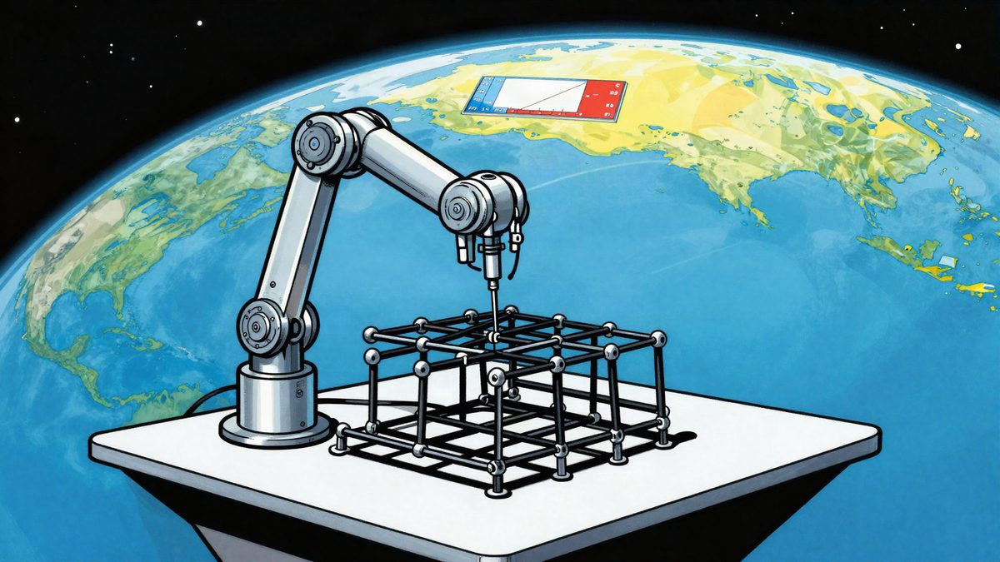
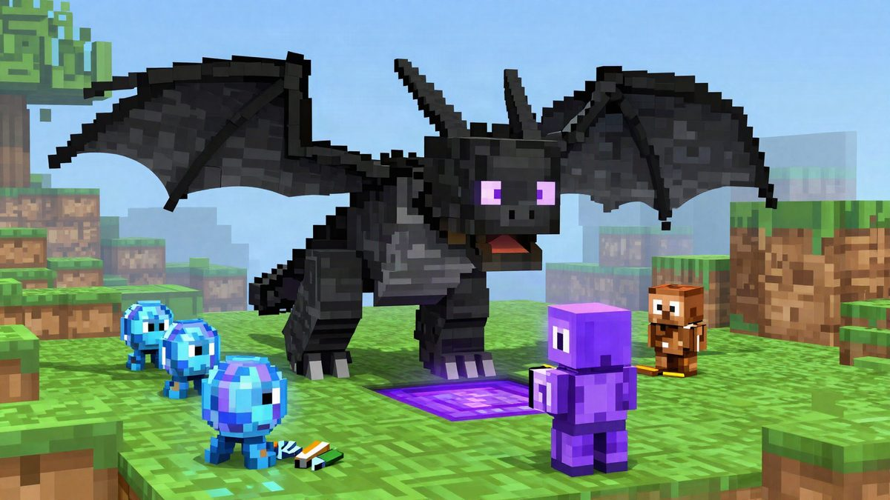

Caltechov robot ASTRA u orbiti je sam složio dio rešetkaste konstrukcije

Robotski sustav ASTRA s Caltecha prvi je put u niskoj Zemljinoj orbiti bez ljudske intervencije sastavio treći segment rešetkaste konstrukcije. Razvijen je u sklopu DARPA-ina programa NOM4D, a planirani reflektor od 11 segmenata nije dovršen do kraja misije u prosincu. Cilj su konstrukcije veličine stotina metara, poput teleskopa i antena.
Istraživači s Caltecha prvi su put uspješno izgradili dio konstrukcije u svemiru bez ljudske intervencije. Robotski sustav ASTRA (Autonomous In-Space Tensioned Reflector Assembly) sastavio je u niskoj Zemljinoj orbiti treći segment, takozvani bay, perimetarske rešetkaste konstrukcije. Razvijen je u sklopu DARPA-ina programa NOM4D.
ASTRA je lansiran 30. ožujka 2026. iz baze Vandenberg Space Force Base na Vigoride 7, orbitalnom vozilu tvrtke Momentus. ASTRA je bio jedan od 10 payloada na SpaceXovoj misiji Transporter-16. Cijeli sustav stane u volumen od oko jednog kubnog metra, a čine ga robotska ruka, motorizirani dispenseri komponenti, montažna ploča i onboard računalo.
Kako ASTRA gradi
Prije lansiranja sustav je imao dva već sastavljena segmenta i komponente za dodatne. U orbiti su kontrolori sa Zemlje naredili računalu da otpusti pričvrsnice i rasklopi postojeća dva segmenta. Zatim je robotska ruka počela graditi treći. Uzima pojedinačne štapove i spojeve iz dispensera, postavlja ih na montažnu ploču i povezuje u traženi segment.
Konstrukcija se sastoji od cijevi od kompozitnih vlakana i aluminijskih spojeva. Kad je segment gotov, sustav na njega pričvrsti reflektirajuću foliju u obliku mreže, izrađenu od perforiranog Kapton filma. Dizajn koristi dvije reflektirajuće mreže od kabela koje se oprugama međusobno prednapinju. Gotov segment potom se gurne prema van, a ruka ponavlja postupak.
Foliju su razvili Caltech i Sveučilište Pennsylvania. Za razliku od pletene metalne mreže u klasičnim rasklopivim reflektorima, ta folija treba manje prednaprezanja, što bi omogućilo lakše konstrukcije uz istu reflektirajuću površinu.
Izazovi u orbiti
U svemiru su se pojavili problemi koji se u laboratoriju na Zemlji nisu javljali. Tim je morao više puta mijenjati naredbe i rješavati neočekivane probleme na temelju slika koje šalje letjelica. Komunikacija je bila moguća u sedam do osam prozora dnevno, svaki od oko 15 minuta. Zato su rješenja prvo testirana na rezervnom letnom primjerku ASTRA-e u Pellegrinovu laboratoriju na Caltechu, pa tek onda poslana u orbitu.
Planirani reflektor trebao je imati 11 segmenata i promjer 1,4 metra. Do kraja misije u prosincu nije dovršen, ali je pokazano da je autonomni pristup izvediv.
Što dalje
Projekt je treća faza programa NOM4D. U prve dvije faze razvijen je koncept sastavljanja i pokazan u laboratoriju. Cilj programa su konstrukcije veličine stotina metara pa i kilometara. Današnje svemirske strukture ograničene su dimenzijama aerodinamičke kapice rakete, pa se moraju slagati preklopljene ili iz dijelova dostavljenih u više lansiranja. Gradnja u orbiti mogla bi to zaobići.
Mogući primjeri primjene su veliki svemirski teleskopi, radiofrekvencijske antene, komunikacijska infrastruktura i solarni paneli za prikupljanje energije u orbiti.
Izvor: Interesting Engineering
Povezani članci
 BYD je u Emiratima pokazao robotsku ruku za punjenje snagom do 1000 kW9. studenoga 2026.
BYD je u Emiratima pokazao robotsku ruku za punjenje snagom do 1000 kW9. studenoga 2026. AT&T i AST SpaceMobile: običan smartphone prešao s mobilne mreže na satelit bez prekida veze4. studenoga 2026.
AT&T i AST SpaceMobile: običan smartphone prešao s mobilne mreže na satelit bez prekida veze4. studenoga 2026.
Googleovi Gemini 4 agenti sami su završili Minecraft za 27 sati i 605 smrti19. listopada 2026.